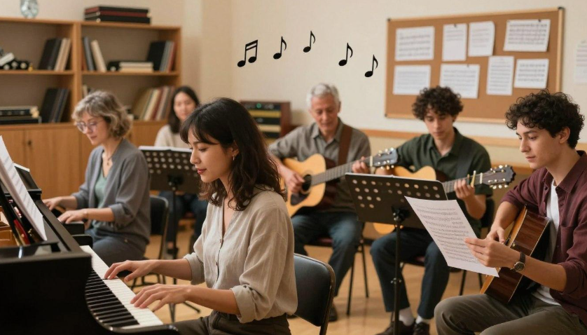

Cours d'instruments
Découvrez des instruments tels que le piano, le violon et la guitare. Apprenez les techniques de base, pratiquez des mélodies et améliorez votre jeu étape par étape.
EXPLOREZ VOTRE PASSION
Découvrez de nouvelles compétences musicales, exprimez votre créativité et prenez plaisir à apprendre avec d'autres passionnés de musique. Chez HARMONY, chacun trouve sa place, des débutants aux musiciens expérimentés.
APPRENEZ QUELQUE CHOSE DE NOUVEAU
Découvrez des instruments tels que le piano, le violon et la guitare. Apprenez les techniques de base, pratiquez des mélodies et améliorez votre jeu étape par étape.

Apprenez à reconnaître les notes de musique, à comprendre le rythme et à lire des partitions musicales simples.
TROUVEZ VOTRE VOIX
Développez votre voix grâce à des exercices vocaux, améliorez votre respiration et interprétez les chansons que vous aimez.
Chantez avec les autres membres, apprenez à suivre le rythme et découvrez le plaisir de créer de la musique ensemble.
CRÉEZ ET COLLABOREZ
Participez à des activités de groupe, explorez des idées musicales et travaillez avec les autres membres sur des projets créatifs.
Entraînez-vous ensemble, échangez des conseils, améliorez vos compétences musicales et préparez-vous aux prochaines représentations.
COMMENCEZ VOTRE AVENTURE MUSICALE
Choisissez l'activité que vous aimez, rencontrez de nouvelles personnes et faites partie de notre communauté musicale.
Rejoindre notre club